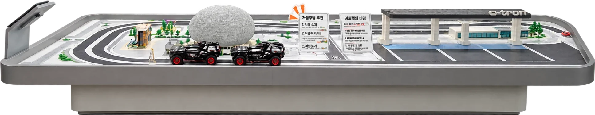
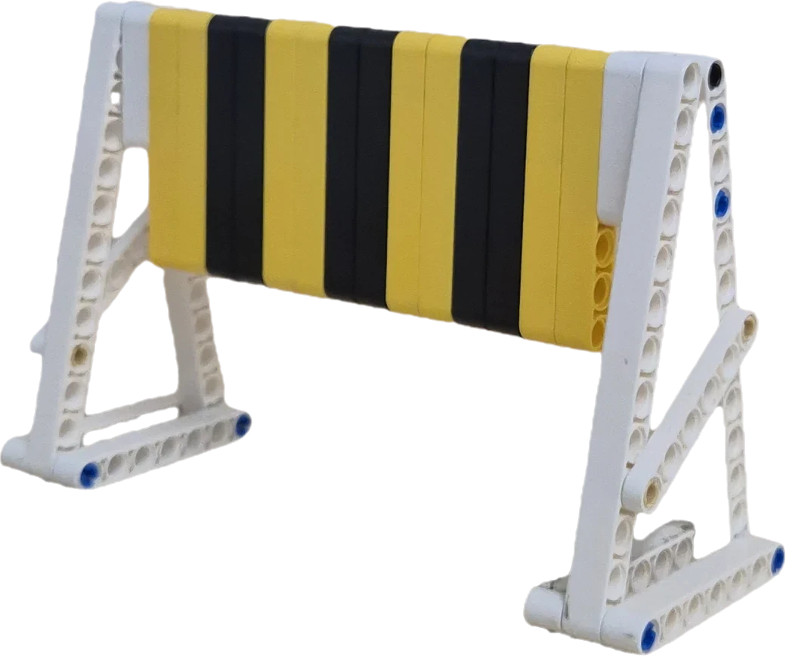

RAIM · 자율주행 디오라마
AR로 자율주행차를 만나 보세요
태블릿으로 디오라마를 비추면 도로 위에 자율주행차가 나타나 스스로 달려요. 차가 무엇을 보고(인식), 어떻게 생각하고(판단), 어떻게 움직이는지(제어) 화면에서 함께 볼 수 있어요.
- 1AR 시작아래 버튼을 누르고 카메라를 허용해요
- 2표식 비추기디오라마 가장자리의 검은 사각형 표식을 비춰요
- 3바리케이드 세우기도로를 막으면 차가 알아보고 멈춰요

확인 중…
관리자 · 전시 설정
-
AR을 시작하면 화면 오른쪽 아래에 관리자 버튼(지도 만들기·경로 기록·차 크기·속도·도로 높이)이 나와요. 여러 태블릿이 같은 지도·경로를 쓰려면 [전시 설정 내보내기]로 받은 diorama.json을 사이트에 올려요.